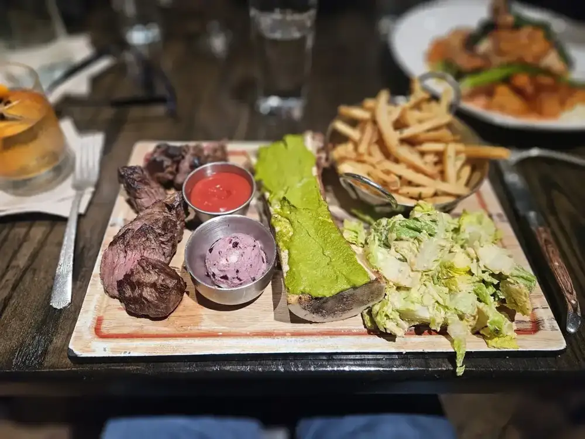
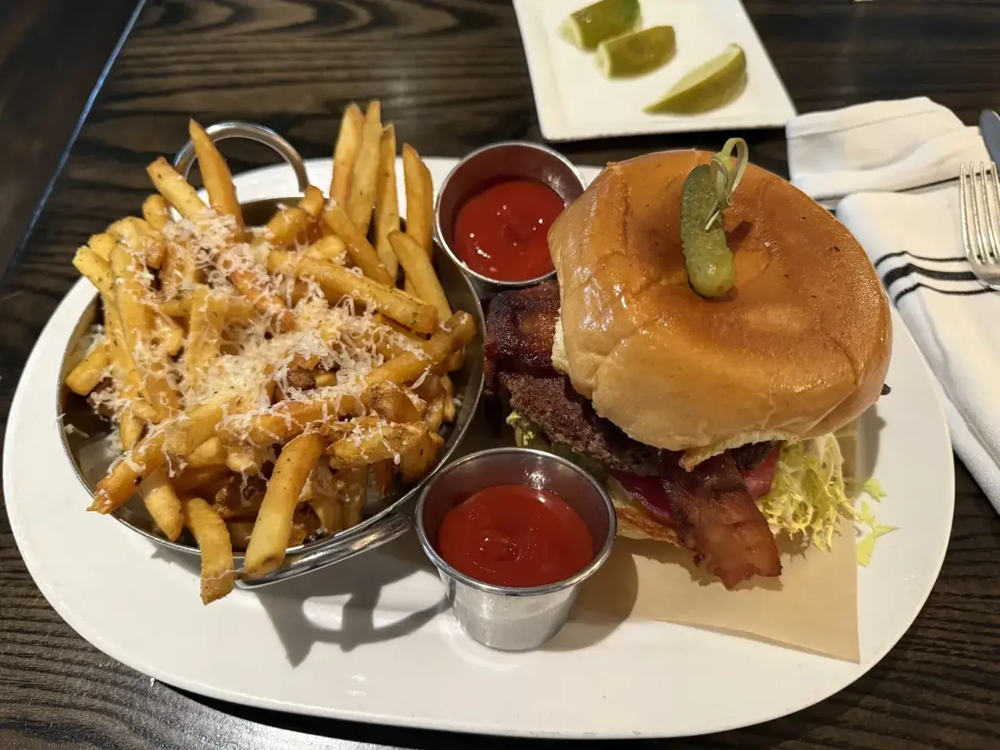
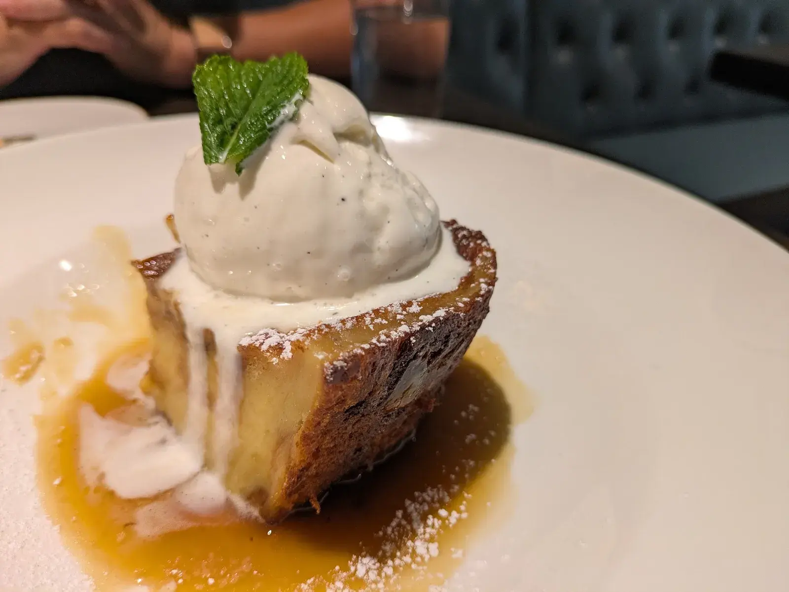

Dinner
Saffron arancini, scallops with Brussels sprouts, steak frites and beef carpaccio.
On Swann · Temple Terrace
On Swann serves Temple Terrace from Tampa.
On Swann is based in Tampa and works with customers from Temple Terrace. Call (813) 251-0110 to ask about timing and directions.
Lunch, dinner and weekend brunch
A seasonal menu with local flair, served at the bar or a table, indoors or out.

Saffron arancini, scallops with Brussels sprouts, steak frites and beef carpaccio.

Chicken salad, short rib hash and other lunch plates.

Brunch Saturday and Sunday. Donuts and desserts too.
4.6 ★ · 2613 Google reviews
On Swann consistently came up as a top restaurant choice in all the social media posts I’ve seen so we finally made it here and it did not disappoint. The atmosphere is charming and upbeat with indoor and outdoor seating. We had a reservation and were seating promptly. Our server Kristin was very friendly, attentive and did a fantastic job. The cocktails were great.
I celebrated my birthday here last night, and everything was perfect. Our server was warm and welcoming, providing attentive and meticulous service throughout the meal. The food was delicious, the kale salad was the best I’ve ever had, and every dish was satisfying!
Loved this place. Very trendy and great vibe. Our bartender Neal was what made the experience great. Very kind, excellent attention And service! Drinks were excellent! Charcuterie board and donuts were great but what made it wonderful was Neal. Great addition to make customers feel welcome! We will absolutely be back and hope we get Neal again!!
We dined here for lunch yesterday( Sunday) we didn’t have a reservation but despite this we were shown to a really lovely table and had the most delicious lunch. We were served by Natalia who was extremely friendly, knowledgeable and professional. I had a chicken salad and my husband had the short rib hash. Both were excellent. The atmosphere is great, really fun and enjoyable. We will be back for dinner
We've been meaning to go here forever , and our friends said let's do it ! The beef carpaccio was so light and refreshing and I'm a bit bias because I love carpaccio but it was done so well!! I got the short rib pasta. While it was tasty it didn't feel like a whole lot of short rib for the price . However we would still definitely come back .